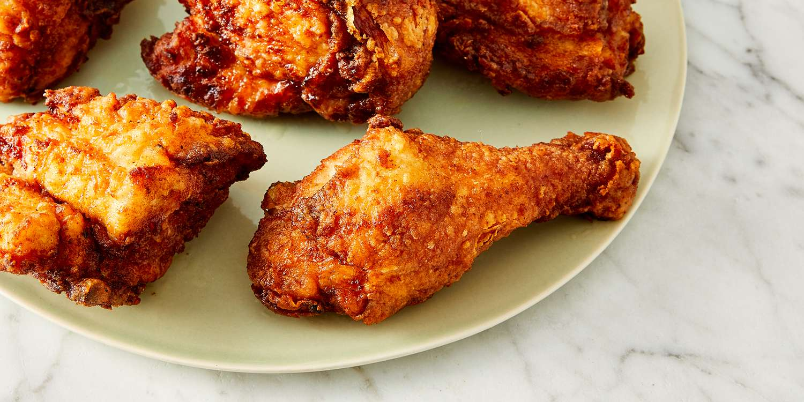

Crispy Fried Chicken
This is the only crispy fried chicken recipe you'll ever need. Why? It combines all the tried-and-true tricks to ensure the juiciest, most flavorful, crispiest chicken every time.

Crispy Fried Chicken Ingredients
- Chicken: Cut a four-pound whole chicken into pieces or purchase four pounds of breasts, drumsticks, wings, legs, and/or thighs at the grocery store.
- Buttermilk: Acidic buttermilk tenderizes the chicken without making it too tough. Also, it helps the flour mixture stick to the chicken.
- Flour: All-purpose flour gives the buttermilk and seasonings something to stick to, while ensuring a wonderfully crispy crust.
- Seasonings: This crispy fried chicken recipe calls for paprika (which helps with browning), salt, and pepper. You can add more spices and seasonings to taste.
- Oil: Vegetable oil is perfect for frying chicken because it has a high smoke point.
Crispy Fried Chicken Step-By-Step
- Make the Breading: Combine the flour, paprika, salt, and pepper in a zip-top bag. Seal the bag and shake until well-combined.
- Dredge the Chicken: Pour buttermilk into a shallow bowl, then dip the chicken (on both sides) until it's completely soaked in buttermilk. Place the soaked chicken in the bag with flour mixture, seal, and shake well to coat. Transfer the coated chicken to a baking sheet, and cover. Allow the flour coating to become a paste-like consistency.
- Fry the Chicken: Pour the oil in a skillet and bring it to high heat. Brown the chicken on both sides, then reduce the heat, cover the skillet, and cook for about 30 minutes. Remove the cover, return the heat to high, and fry until extra crispy. Drain the chicken on paper towels.